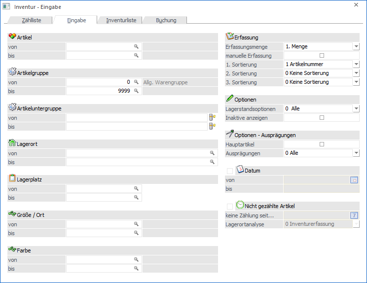
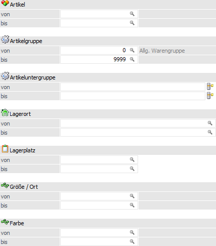
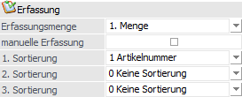
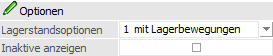
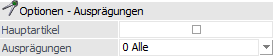
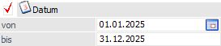
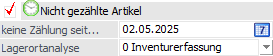
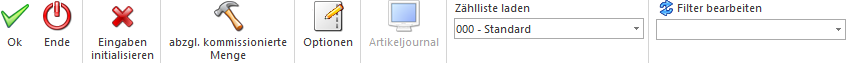

In dem Register "Eingabe" erfolgt zunächst die Selektion der zu erfassenden Artikel. Nach der Grundselektion (inklusive weiterer Einstellungen) wird die Inventur - Erfassung mit Hilfe des Buttons "Ok" bzw. der Taste F5 gestartet. Hierbei sind folgende Punkte zu beachten:
ü Artikeltypen
Die folgenden
Artikeltypen werden in den Inventur nicht berücksichtigt:
ü 1 - Lagerneutraler Artikel
ü 3 - Handelsstückliste (Ausnahme "Fertigungsstückliste")
ü Zählliste
Wird mit einer zuvor
definierten Zählliste gearbeitet
(siehe Button "Zählliste laden"), so stehen nur die Einstellungen
"Erfassungsmenge", "1. Sortierung / 2. Sortierung / 3. Sortierung",
"Hauptartikel" und "Erfassungsanzeige" zur Verfügung.
ü Benutzerspezifische
Speicherung
Die folgenden Einstellungen werden benutzerspezifisch gespeichert
und automatisch in die Register Zählliste und Inventurliste übertragen:
ü 1. Sortierung / 2. Sortierung / 3. Sortierung
ü Lagerstandsoptionen
ü Inaktive anzeigen
ü Hauptartikel
ü Ausprägungen

Die Inventurerfassung kann nach den folgenden Kriterien eingeschränkt bzw. definiert werden:
Selektion

Ø Artikel von / bis
An dieser Stelle können die Artikel für die Erfassung hinterlegt werden.
Ø Artikelgruppe von / bis
In diesen Feldern kann nach den Artikelgruppen eingeschränkt werden, welche in der Erfassung berücksichtigt werden sollen.
Ø Artikeluntergruppe von / bis
An dieser Stelle kann nach den Artikeluntergruppen eingeschränkt werden. Bleiben die Felder leer, so werden alle Artikel aller Artikeluntergruppen in der Erfassung berücksichtigt.
Ø Lagerort von / bis
Für Artikel mit einer Lagerortstruktur können in diesen Feldern eine Selektion auf die Lagerorte vorgenommen werden. Artikel ohne Lagerortstruktur sind von dieser Selektion nicht betroffen.
Ø Lagerplatz von / bis
Hier kann nach dem Lagerplatz selektiert werden.
Ø Ausprägung 1 von / bis (hier "Größe / Ort")
Zusätzlich kann eine Einschränkung auf die Ausprägung 1 vorgenommen werden. Sobald eine Einschränkung auf Ausprägung 1 vorhanden ist, wird die, unter "Artikel" eingegebene Nummer, als Hauptartikelnummer verwendet.
Beispiel
Wenn unter "Artikel von / bis" die Nummer "10018" und unter Ausprägung 1 "K" bis "E" eingegeben wird, werden alle selektierten Ausprägungsartikel des Artikels 10018 in der Erfassung berücksichtigt.
Ø Ausprägung 2 von / bis (hier "Farbe")
Neben Ausprägung 1 kann auch eine Einschränkung auf die Ausprägung 2 vorgenommen werden. Sobald eine Einschränkung auf Ausprägung 2 vorhanden ist, wird die, unter "Artikel" eingegebene Nummer, als Hauptartikelnummer verwendet.
Beispiel
Wenn unter "Artikel von / bis" die Nummer "CZ010" und unter Ausprägung 2 "GR" bis "ROT" eingegeben wird, werden alle selektierten Ausprägungsartikel des Artikels CZ010 in der Erfassung berücksichtigt.
Erfassung

Ø Erfassungsmenge
Werden bei der Inventur Artikel erfasst, die lt. Stammdaten mit einer Lagerführung in 2 Mengen angelegt wurden, kann hier entschieden werden, ob die Eingabemenge die 1. oder die 2. Menge ist. Je nachdem wird die andere Menge lt. Umrechnungsfaktor vorgeschlagen und kann ebenfalls verändert werden.
Ø manuelle Erfassung
Durch die Aktivierung der Option "manuelle Erfassung" werden alle Felder (bis auf "Erfassungsmenge") für eine Eingabe gesperrt. In der Erfassungstabelle (siehe Button "Ok") werden keine Artikel vorgeschlagen, sondern dieses können manuell erfasst werden. Somit kann die Erfassung der Artikel in einer beliebigen Reihenfolge erfolgen.
Hinweis
Folgende Punkte sind bei der manuellen Erfassung zu beachten:
ü Wenn ein Hauptartikel mit
Ausprägung eingegeben wird, so kann bei diesem keine Menge und kein Datum
eingetragen werden. Stattdessen wird das Ausprägungsfenster geöffnet und es kann
bei den entsprechenden Ausprägungen der Inventurstand eingetragen
werden.
Zusätzlich besteht im Fenster "Ausprägungen erfassen" natürlich auch
die Möglichkeit, neue Ausprägungen anzulegen.
ü Der Button "Übernahme Soll => Ist" steht in der Erfassung nicht zur Verfügung.
ü Es können nur Artikel erfasst werden, welche keine "lagerneutralen Artikel" sind und über einen eigenen Lagerstamm verfügen (trifft dies nicht zu, wird eine entsprechende Meldung ausgegeben).
ü Wird ein Artikel erfasst, welcher bereits ungebuchte Inventurwerte besitzt, so werden diese vorgeschlagen, sofern das Inventurdatum gleich oder größer dem Einlogdatum ist.
Ø 1. Sortierung / 2. Sortierung / 3. Sortierung
An dieser Stelle kann die Sortierung der Erfassungstabelle definiert werden, wobei eine 3-stufige Sortierung möglich ist. Folgende Kriterien stehen hierbei zur Verfügung:
ü 0 - keine Sortierung (nur bei 2. und 3. Sortierung)
ü 1 - Artikelnummer
ü 2 - Artikelbezeichnung
ü 3 - Artikelgruppe
ü 4 - Lagerplatz
ü 5 - Artikeluntergruppe
ü 6 - Ausprägung 1
ü 7 - Ausprägung 2
Hinweis
Sollte mit einem Filter gearbeitet werden, so erfolgt die Sortierung standardmäßig über die im Filter getroffenen Angaben, d.h. die hier getroffene Auswahl wird nur genutzt, wenn im Filter kein Sortierkriterium angegeben wurde.
Optionen

Ø Lagerstandsoptionen
An dieser Stelle kann mit Hilfe einer Auswahlliste definiert werden, welche Artikel - aufgrund des Lagerstands bzw. der Lagerbewegungen - in der Erfassung berücksichtigt werden sollen.
ü 0 - Alle Artikel
Es werden alle
Artikel berücksichtigt.
ü 1 - mit Lagerbewegung
Es werden
alle Artikel berücksichtigt, die im Lager zumindest einmal bewegt wurden. Dabei
wird der Lagerstand nicht berücksichtigt. Jedoch ist hierbei zu beachten, dass
Artikel, die mit derselben Buchungsart und selben Menge zu und wieder abgebucht
werden, dadurch einen Lagerstand von 0 haben, nicht in dieser Einschränkung
ausgegeben / berücksichtigt werden!
ü 2 - mit Lagerstand größer 0
Es
werden alle Artikel berücksichtigt, die einen positiven Lagerstand haben. Dabei
werden Artikel, die zwar Lagerbewegungen aufweisen, aber deren Lagerstand 0 ist,
nicht berücksichtigt.
ü 3 - mit Lagerstand ungleich
0
Hier werden alle Artikel berücksichtigt, deren Lagerstand nicht 0 ist, also
auch Artikel, die einen negativen Lagerstand aufweisen.
ü 4 - mit Lagerstand kleiner
0
Hier werden alle Artikel berücksichtigt, deren Lagerstand kleiner 0
ist.
ü 5 - mit Lagerstand gleich 0 und
Lagerwert ungleich 0
Hier werden alle Artikel berücksichtigt, deren
Lagerstand zwar 0 ist, die jedoch einen Lagerwert aufweisen (egal ob dieser
negativ oder positiv ist)
ü 6 - mit Lagerstand gleich 0
(unabhängig vom Lagerwert)
Hier werden alle Artikel berücksichtigt, deren
Lagerstand 0 ist, unabhängig davon wie hoch der Lagerwert ist.
Ø Inaktive anzeigen
Über diese Option kann definiert werden, ob auch inaktive Artikel ausgegeben werden sollen oder nicht.
Optionen - Ausprägungen

Ø Hauptartikel
Mit dieser Option wird bei einem Erfassungsvorschlag zusätzlich die Hauptartikelzeile von Ausprägungen ausgegeben. Neben der besseren Orientierung können mit Hilfe des Hauptartikels Ausprägungszeilen bei Bedarf ein- und ausgeblendet werden
Ø Ausprägungen
An dieser Stelle kann definiert werden, welche Art von Ausprägungen bei einem Erfassungsvorschlag berücksichtigt werden soll:
ü 0 - Alle
Es werden alle
Ausprägungen, unabhängig von ihrer Art, vorgeschlagen.
ü 1 - ohne Zwischenartikel
Es
werden keine Zwischenartikel, sondern nur vollständige Ausprägungen,
vorgeschlagen.
ü 2 - nur Zwischenartikel
Es
werden nur die Zwischenartikel vorgeschlagen. Die vollständigen Ausprägungen
werden nicht berücksichtigt.
Beispiel - Hauptartikel / Zwischenartikel / vollständige Ausprägung
Bei dem Artikel "10015" handelt es sich um rote Fahrräder, welche mit den Ausprägungen "Größe" (Ausp.1) und "Seriennummer" geführt werden. Die Zwischenartikeln sind in diesem Fall die Kombination "Hauptartikel + Größe", die vollständige Ausprägung "Hauptartikel + Größe + Seriennummer".
Datum (nur ohne Zählliste)

Ø Datum von / bis
Generell werden bei einem Erfassungsvorschlag, neben noch nicht erfassten Artikel, all jene getätigten und ungebuchten Erfassungen wieder angezeigt, deren Inventurdatum gleich oder größer dem Einlogdatum entsprechen. Sollen hingegen ältere Inventurerfassungen editiert werden, so kann diese Datumsselektion aktiviert werden. Es werden in der Folge all jene ungebuchten Inventurerfassungen angezeigt, welche im angegebenen Bereich liegen.
Hinweis
Während des Editierens von bestehenden Erfassungen ist eine Neuerfassung nicht möglich! Eine Ausnahme bildet hierbei die Zählliste. Wurde eine ausgewählt, so wird hier das Inventurdatum lt. Zählliste angezeigt. Die Erfassung weitere Zeilen ist wiederum abhängig von der Zähllisteneinstellung.
Nicht gezählte Artikel (nur ohne Zählliste)

Ø Nicht gezählte Artikel
Durch Aktivierung der Option "Nicht gezählte Artikel" unterbreitet die WinLine in der Folge einen Erfassungsvorschlag mit all jenen Artikeln, welche bislang noch gar nicht erfasst wurden oder deren letztes Inventurdatum "<" (kleiner) dem Datum "keine Zählung seit…" ist.
Ø keine Zählung seit…
Wurde die Option "Nicht gezählte Artikel" aktiviert, so werden zunächst alle Artikel ohne Inventurerfassung ausgegeben. Zusätzlich erscheinen all jenen Artikel, deren letztes Inventurdatum "<" (kleiner) dem hier hinterlegten Datum sind.
Ø Lagerortanalyse
Wurde die Option "Nicht gezählte Artikel" aktiviert, so kann mit Hilfe dieser Einstellung definiert werden, welche Lagerorte bei Lagerortartikeln geprüft werden sollen bzw. wie die Prüfung genau erfolgen soll. Folgende Varianten stehen hierbei zur Verfügung:
ü 0 - Inventurerfassung
Es werden
nur jene Lagerorte pro Artikel überprüft, für welche es im aktuellen Jahr
bereits irgendwelche Inventurerfassungen gibt. Die Prüfung der Erfassung(en)
erfolgt gegen das Datum "keine Zählung seit…".
ü 1 - Inventurerfassung inkl.
Artikelstamm
Zusätzlich zu "0 - Inventurerfassung" werden alle
Lagerortartikel aufgeführt, für welche im aktuellen Jahr noch keine
Inventurerfassungen existieren.
Hinweis
In der Inventurerfassung werden solche Artikel ohne Lagerorte dargestellt.
ü 2 - Inventurerfassung (erw.
Analyse) inkl. Artikelstamm
Wird mit einer Selektion nach Lagerorten
gearbeitet, so könnte es sein, dass alle Inventurerfassungen des Jahres von
einem Artikel ausgegrenzt werden. Sollen solche Artikel trotzdem auf der
Auswertung erscheinen, so ist diese Analyse zu wählen.
Hinweis
In der Inventurerfassung werden solche Artikel ohne Lagerorte dargestellt.
Beispiel
Für den Ort "Fläche N2" des Artikels "10001" wurde eine Erfassung getätigt. Wenn in der Selektion nun eine Eingrenzung auf den Lagerort "Regal N1" erfolgt, so würde die Erfassung für "Fläche N2" ignoriert werden. Wenn der Artikel trotzdem ausgegeben werden soll, so ist die Analyseform "2 - Inventurerfassung (erw. Analyse) inkl. Artikelstamm" zu wählen.
ü 3 - Lagerortbestand
Es werden
pro Artikel alle Lagerorte berücksichtigt, für welche aktuell ein Bestand
existiert. Für diese Orte wird wiederum nach einer Inventurerfassung gesucht und
wenn es eine gibt, diese gegen das Datum "keine Zählung seit…" geprüft.
Existiert für einen Lagerort mit Bestand keine Inventurerfassung, so wird dieser
immer in der Erfassung ausgegeben.
ü 4 - Lagerortbestand inkl.
Artikelstamm
Zusätzlich zu "3 - Lagerortbestand" werden alle Lagerortartikel
aufgeführt, für welche im aktuellen Jahr noch keine Lagerortbestände
existieren.
Hinweis
In der Inventurerfassung werden solche Artikel ohne Lagerorte dargestellt.
ü 5 - Lagerortbestand (erw. Analyse)
inkl. Artikelstamm
Wird mit einer Selektion nach Lagerorten gearbeitet, so
könnte es sein, dass alle aktuellen Lagerortbestände eines Artikel ausgegrenzt
werden. Sollen solche Artikel trotzdem auf der Auswertung erscheinen, so ist
diese Analyse zu wählen.
Hinweis
In der Inventurerfassung werden solche Artikel ohne Lagerorte dargestellt.
Beispiel
Nur für den Ort "Fläche N2" des Artikels "10001" existiert ein Lagerortbestand. Wenn in der Selektion nun eine Eingrenzung auf den Lagerort "Regal N1" erfolgt, so würde der Bestand für "Fläche N2" ignoriert werden. Wenn der Artikel trotzdem ausgegeben werden soll, so ist die Analyseform "5 - Lagerortbestand (erw. Analyse) inkl. Artikelstamm" zu wählen.
ü 6 - Lagerortstamm
Es werden pro
Artikel alle Lagerorte aus den Stammdaten berücksichtigt. Für diese Orte wird
wiederum nach einer Inventurerfassung gesucht und wenn es eine gibt, diese gegen
das Datum "keine Zählung seit…" geprüft. Existiert für einen Lagerort keine
Inventurerfassung, so wird dieser immer auf der Auswertung ausgegeben.
Ø letzte Hierarchie-Ebene
Bei Nutzung der Lagerortanalyse "6 - Lagerortstamm" steht die Option "letzte Hierarchie-Ebene" zur Verfügung. Sobald diese aktiviert wurde, werden nur noch Orte der letzten Hierarchie-Ebene bei dem Erfassungsvorschlag berücksichtigt.
Lagerortfunktionen

Bei Nutzung der Lagerortanalyse "6 - Lagerortstamm" kann an dieser Stelle eine Selektion für den Erfassungsvorschlag der Lagerorte erfolgen.
Hinweis
Innerhalb der ausgewählten Funktionen bzw. Eigenschaften erfolgt eine ODER-Verknüpfung. Die beiden Elemente "Funktion" und "Eigenschaft" werden hingegen mit einer UND-Verbindung verknüpft.
Beispiele
ü Bei der Funktion wird "Warenausgangslager" und "Wareneingangslager" ausgewählt und die Eigenschaft bleibt leer. Somit werden alle Lagerorte mit Bestand ausgegeben, die entweder Warenausgangslager oder Wareneingangslager oder beides hinterlegt haben.
ü Die Funktion bleibt leer und bei den Eigenschaften wird z.B. "Kühllager" und "Trockenlager" per Checkbox ausgewählt. Somit werden alle Lagerorte mit Bestand ausgegeben, die entweder Kühllager oder Trockenlager oder beides hinterlegt haben.
ü Bei der Funktion wird "Warenausgangslager" und bei den Eigenschaften wird "Kühllager" und "Trockenlager" ausgewählt. Nun werden alle Lagerorte mit Bestand, die entweder Warenausgangslager UND Kühllager oder Warenausgangslager UND Trockenlager hinterlegt haben, ausgegeben.
Ø Funktion
Hier ist die Auswahl einer oder mehrerer Lagerortfunktionen per Auswahlbox möglich. Bei Auswahl mehrerer Funktionen werden diese mit der ODER-Verknüpfung angewendet.
Ø Eigenschaft
Hier ist die Auswahl einer oder mehrerer Eigenschaften per Auswahlbox möglich. Bei Auswahl mehrerer Eigenschaften werden diese mit der ODER-Verknüpfung angewendet.
Zähllisteninfo (nur mit Zählliste)
Sobald eine zuvor angelegte Zählliste aus der Auswahlliste "Zählliste laden" (siehe Buttons) gewählt wurde, wird ein Informationsbereich zur Zählliste angezeigt.
Ø Bestandsoptionen
In diesem Feld wird angezeigt, welche Lagerorte grundsätzlich in der Zählliste berücksichtigt werden sollen.
Ø Artikelanzeige
An dieser Stelle wird angezeigt, ob Artikel mit bzw. ohne Lagerortstruktur berücksichtigt werden.
Ø manuelle Ergänzungen zulassen
An dieser Stelle wird angezeigt, ob die Zählliste während der Erfassung um weitere Artikel bzw. Lagerorte ergänzt werden darf.
Ø Erfassungsanzeige
Handelt es sich um eine Zählliste mit manueller Ergänzung, so kann an dieser Stelle definiert werden, welche Artikel in der Erfassung angezeigt werden sollen. Folgende Varianten stehen zur Verfügung:
ü 0 - laut Zählliste
In der
Inventurerfassung werden all jene Artikel angezeigt, welche lt.
Zähllistendefinition zu erfassen sind. Zusätzlich werden manuelle Ergänzung
dargestellt.
ü 1 - getätigte Erfassung
In der
Inventurerfassung werden alle bisher für die Zählliste erfassten Artikel
angezeigt.
Buttons

Ø Ok
Nach Anwahl des Buttons "Ok" bzw. der Taste F5 öffnet ich das Fenster Inventur - Erfassung. In diesem können die Inventurerfassungen vorgenommen werden (siehe Kapitel "Inventur - Erfassung").
Ø Ende
Durch Drücken des Buttons "Ende" bzw. der Taste ESC wird das Fenster geschlossen.
Ø Eingaben initialisieren
Mit Hilfe des Buttons "Eingaben initialisieren" bzw. der Taste F4 werden alle vorgenommenen Selektionen entfernt.
Ø abzgl. kommissionierte Menge
Wird dieser Button aktiviert (diese Einstellung wird benutzerspezifisch gespeichert), so werden bei der Berechnung des Soll-Lagerstandes auch die bereits kommissionierten Mengen berücksichtigt. Dieser Button bleibt solange aktiviert, bis er wieder deaktiviert wird.
Hinweis
Bei Artikel mit Lagerorten des Lagermanagements hat dieser Button keine Auswirkung, da keine Kommissionierungszeilen pro Ort gebildet werden.
Ø Optionen
Durch Anwahl dieses Buttons wird das Fenster Inventur - Optionen geöffnet. In diesem können u.a. die historischen Inventurerfassungen reaktiviert werden.
Hinweis
Der Buttons steht nur WinLine Benutzer des Typs "Administrator" oder mit der Administratorenberechtigung "Datenadministration" zur Verfügung.
Ø Artikeljournal
Der Button "Artikeljournal" steht nur zur Verfügung, wenn unter "Zählliste laden" eine zuvor angelegte Zählliste ausgewählt wurde. Durch die Anwahl wird eine Liste am Bildschirm ausgegeben, in welcher alle Lagerbewegungen aufgelistet werden, welche im Inventurzeitraum getätigt wurden (Datum "Inventurdatum von" ausgenommen). Hierbei werden nur die Artikel gemäß Zählliste berücksichtigt.
Ø Zählliste laden
Mit Hilfe der Auswahlliste "Zählliste laden" kann eine zuvor angelegte Zählliste geladen werden. Hierdurch werden alle Selektionsfelder automatisch auf die Selektion gemäß Zählliste gesetzt und sind nicht mehr editierbar.
Ø Filter bearbeiten
Durch Anklicken des Buttons "Filter bearbeiten" kann die Inventurerfassung nach frei definierbaren Kriterien eingeschränkt und sortiert werden.
Hinweis
Der Filter steht nicht zur Verfügung, wenn mit einer Zählliste gearbeitet wird!